中文
中文B. E. Kane
Editor’s Note
In the 1980s, physicists began trying to build computing devices that exploit quantum effects, which could be much more powerful than classical devices, at least for certain computational tasks. The practical development of such machines was immensely challenging because of their inherent sensitivity to disruption from the environment. Here Australian physicist Bruce Kane proposes a scheme for implementing a quantum computer by storing its information in the relatively isolated spins of nuclei of dopant atoms inserted into silicon electronic devices. Logical operations, he suggests, could be performed on these spins with external electric fields, and measurements made with currents of spin-polarized electrons. Practical quantum computers are now being developed, and this strategy remains one of many being explored. 中文
Quantum computers promise to exceed the computational efficiency of ordinary classical machines because quantum algorithms allow the execution of certain tasks in fewer steps. But practical implementation of these machines poses a formidable challenge. Here I present a scheme for implementing a quantum-mechanical computer. Information is encoded onto the nuclear spins of donor atoms in doped silicon electronic devices. Logical operations on individual spins are performed using externally applied electric fields, and spin measurements are made using currents of spin-polarized electrons. The realization of such a computer is dependent on future refinements of conventional silicon electronics. 中文
ALTHOUGH the concept of information underlying all modern computer technology is essentially classical, physicists know that nature obeys the laws of quantum mechanics. The idea of a quantum computer has been developed theoretically over several decades to elucidate fundamental questions concerning the capabilities and limitations of machines in which information is treated quantum mechanically1,2. Specifically, in quantum computers the ones and zeros of classical digital computers are replaced by the quantum state of a two-level system (a qubit). Logical operations carried out on the qubits and their measurement to determine the result of the computation must obey quantum-mechanical laws. Quantum computation can in principle only occur in systems that are almost completely isolated from their environment and which consequently must dissipate no energy during the process of computation, conditions that are extraordinarily difficult to fulfil in practice. 中文
Interest in quantum computation has increased dramatically in the past four years because of two important insights: first, quantum algorithms (most notably for prime factorization3,4 and for exhaustive search5) have been developed that outperform the best known algorithms doing the same tasks on a classical computer. These algorithms require that the internal state of the quantum computer be controlled with extraordinary precision, so that the coherent quantum state upon which the quantum algorithms rely is not destroyed. Because completely preventing decoherence (uncontrolled interaction of a quantum system with its surrounding environment) is impossible, the existence of quantum algorithms does not prove that they can ever be implemented in a real machine. 中文
The second critical insight has been the discovery of quantum error-correcting codes that enable quantum computers to operate despite some degree of decoherence and which may make quantum computers experimentally realizable6,7. The tasks that lie ahead to create an actual quantum computer are formidable: Preskill8 has estimated that a quantum computer operating on 106 qubits with a 10－6 probability of error in each operation would exceed the capabilities of contemporary conventional computers on the prime factorization problem. To make use of error-correcting codes, logical operations and measurement must be able to proceed in parallel on qubits throughout the computer. 中文
The states of spin 1/2 particles are two-level systems that can potentially be used for quantum computation. Nuclear spins have been incorporated into several quantum computer proposals9-12 because they are extremely well isolated from their environment and so operations on nuclear spin qubits could have low error rates. The primary challenge in using nuclear spins in quantum computers lies in measuring the spins. The bulk spin resonance approach to quantum computation11,12 circumvents the single-spin detection problem essentially by performing quantum calculations in parallel in a large number of molecules and determining the result from macroscopic magnetization measurements. The measurable signal decreases with the number of qubits, however, and scaling this approach above about ten qubits will be technically demanding37. 中文
To attain the goal of a 106 qubit quantum computer, it has been suggested that a “solid state” approach13 might eventually replicate the enormous success of modern electronics fabrication technology. An attractive alternative approach to nuclear spin quantum computation is to incorporate nuclear spins into an electronic device and to detect the spins and control their interactions electronically14. Electron and nuclear spins are coupled by the hyperfine interaction15. Under appropriate circumstances, polarization is transferred between the two spin systems and nuclear spin polarization is detectable by its effect on the electronic properties of a sample16,17. Electronic devices for both generating and detecting nuclear spin polarization, implemented at low temperatures in GaAs / AlxGa1-xAs heterostructures, have been developed18, and similar devices have been incorporated into nanostructures19,20. Although the number of spins probed in the nanostructure experiments is still large (~1011; ref. 19), sensitivity will improve in optimized devices and in systems with larger hyperfine interactions. 中文
Here I present a scheme for implementing a quantum computer on an array of nuclear spins located on donors in silicon, the semiconductor used in most conventional computer electronics. Logical operations and measurements can in principle be performed independently and in parallel on each spin in the array. I describe specific electronic devices for the manipulation and measurement of nuclear spins, fabrication of which will require significant advances in the rapidly moving field of nanotechnology. Although it is likely that scaling the devices proposed here into a computer of the size envisaged by Preskill8 will be an extraordinary challenge, a silicon-based quantum computer is in a unique position to benefit from the resources and ingenuity being directed towards making conventional electronics of ever smaller size and greater complexity. 中文
Quantum Computation with a 31P Array in Silicon
The strength of the hyperfine interaction is proportional to the probability density of the electron wavefunction at the nucleus. In semiconductors, the electron wavefunction extends over large distances through the crystal lattice. Two nuclear spins can consequently interact with the same electron, leading to electron-mediated or indirect nuclear spin coupling15. Because the electron is sensitive to externally applied electric fields, the hyperfine interaction and electron-mediated nuclear spin interaction can be controlled by voltages applied to metallic gates in a semiconductor device, enabling the external manipulation of nuclear spin dynamics that is necessary for quantum computation. 中文
The conditions required for electron-coupled nuclear spin computation and single nuclear spin detection can arise if the nuclear spin is located on a positively charged donor in a semiconductor host. The electron wavefunction is then concentrated at the donor nucleus (for s orbitals and energy bands composed primarily of them), yielding a large hyperfine interaction energy. For shallow-level donors, however, the electron wavefunction extends tens or hundreds of ångströms away from the donor nucleus, allowing electron-mediated nuclear spin coupling to occur over comparable distances. The quantum computer proposed here comprises an array of such donors positioned beneath the surface of a semiconductor host (Fig. 1). A quantum mechanical calculation proceeds by the precise control of three external parameters: (1) gates above the donors control the strength of the hyperfine interactions and hence the resonance frequency of the nuclear spins beneath them; (2) gates between the donors turn on and off electron-mediated coupling between the nuclear spins13; (3) a globally applied a.c. magnetic field Bac flips nuclear spins at resonance. Custom adjustment of the coupling of each spin to its neighbours and to Bac enables different operations to be performed on each of the spins simultaneously. Finally, measurements are performed by transferring nuclear spin polarization to the electrons and determining the electron spin state by its effect on the orbital wavefunction of the electrons, which can be probed using capacitance measurements between adjacent gates. 中文
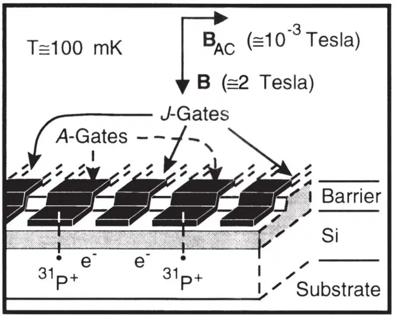
Fig. 1. Illustration of two cells in a one-dimensional array containing 31P donors and electrons in a Si host, separated by a barrier from metal gates on the surface. “A gates”control the resonance frequency of the nuclear spin qubits; “J gates”control the electron-mediated coupling between adjacent nuclear spins. The ledge over which the gates cross localizes the gate electric field in the vicinity of the donors. 中文
An important requirement for a quantum computer is to isolate the qubits from any degrees of freedom that may lead to decoherence. If the qubits are spins on a donor in a semiconductor, nuclear spins in the host are a large reservoir with which the donor spins can interact. Consequently, the host should contain only nuclei with spin I=0. This simple requirement unfortunately eliminates all III–V semiconductors as host candidates, because none of their constituent elements possesses stable I=0 isotopes21. Group IV semiconductors are composed primarily I=0 isotopes and can in principle be purified to contain only I=0 isotopes. Because of the advanced state of Si materials technology and the tremendous effort currently underway in Si nanofabrication, Si is the obvious choice for the semiconductor host. 中文
The only I=1/2 shallow (group V) donor in Si is 31P. The Si:31P system was exhaustively studied 40 years ago in the first electron–nuclear double-resonance experiments22,23. At sufficiently low 31P concentrations at temperature T=1.5 K, the electron spin relaxation time is thousands of seconds and the 31P nuclear spin relaxation time exceeds 10 hours. It is likely that at millikelvin temperatures the phonon limited 31P relaxation time is of the order of 1018 seconds (ref. 24), making this system ideal for quantum computation. 中文
The purpose of the electrons in the computer is to mediate nuclear spin interactions and to facilitate measurement of the nuclear spins. Irreversible interactions between electron and nuclear spins must not occur as the computation proceeds: the electrons must be in a non-degenerate ground state throughout the computation. At sufficiently low temperatures, electrons only occupy the lowest energy-bound state at the donor, whose twofold spin degeneracy is broken by an applied magnetic field B. (The valley degeneracy of the Si conduction band is broken in the vicinity of the donor25. The lowest donor excited state is approximately 15 meV above the ground state23.) The electrons will only occupy the lowest energy spin level when 2μBB ≫ kT, where μB is the Bohr magneton. (In Si, the Landé g-factor is very close to +2, so g=2 is used throughout this discussion.) The electrons will be completely spin-polarized
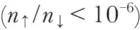
when T≤100 mK and B≥2 tesla. A quantum-mechanical computer is non-dissipative and can consequently operate at low temperatures. Dissipation will arise external to the computer from gate biasing and from eddy currents caused by Bac, and during polarization and measurement of the nuclear spins. These effects will determine the minimum operable temperature of the computer. For this discussion, I will assume T=100 mK and B=2 T. Note that these conditions do not fully polarize the nuclear spins, which are instead aligned by interactions with the polarized electrons. 中文
Magnitude of Spin Interactions in Si:31P
The size of the interactions between spins determines both the time required to do elementary operations on the qubits and the separation necessary between donors in the array. The hamiltonian for a nuclear spin–electron system in Si, applicable for an I=1/2 donor nucleus and with B║z is
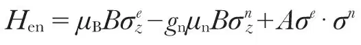
, where σ are the Pauli spin matrices (with eigenvalues ±1), μn is the nuclear magneton, gn is the nuclear g-factor (1.13 for 31P; ref. 21), and is the contact hyperfine interaction energy, with |Ψ(0)|2, the probability density of the electron wavefunction, evaluated at the nucleus. If the electron is in its ground state, the frequency separation of the nuclear levels is, to second order
is the contact hyperfine interaction energy, with |Ψ(0)|2, the probability density of the electron wavefunction, evaluated at the nucleus. If the electron is in its ground state, the frequency separation of the nuclear levels is, to second order
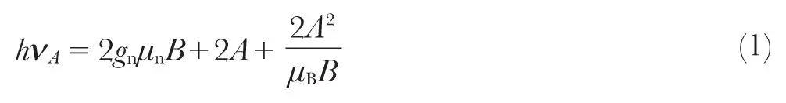
In Si:31P, 2A / h=58 MHz, and the second term in equation (1) exceeds the first term for B<3.5 T. 中文
An electric field applied to the electron–donor system shifts the electron wavefunction envelope away from the nucleus and reduces the hyperfine interaction. The size of this shift, following estimates of Kohn25 of shallow donor Stark shifts in Si, is shown in Fig. 2 for a donor 200 Å beneath a gate. A donor nuclear spin–electron system close to an “A gate” functions as a voltage-controlled oscillator: the precession frequency of the nuclear spin is controllable externally, and spins can be selectively brought into resonance with Bac, allowing arbitrary rotations to be performed on each nuclear spin. 中文
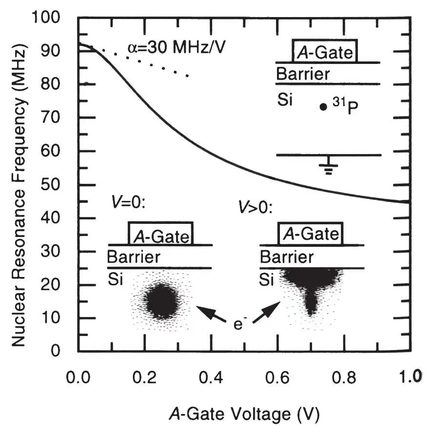
Fig. 2. An electric field applied to an A gate pulls the electron wavefunction away from the donor and towards the barrier, reducing the hyperfine interaction and the resonance frequency of the nucleus. The donor nucleus–electron system is a voltage-controlled oscillator with a tuning parameter α of the order of 30 MHz V－1. 中文
Quantum mechanical computation requires, in addition to single spin rotations, the two-qubit “controlled rotation” operation, which rotates the spin of a target qubit through a prescribed angle if, and only if, the control qubit is oriented in a specified direction, and leaves the orientation of the control qubit unchanged26,27. Performing the controlled rotation operation requires nuclear-spin exchange between two donor nucleus – electron spin systems13, which will arise from electron-mediated interactions when the donors are sufficiently close to each other. The hamiltonian of two coupled donor nucleus–electron systems, valid at energy scales small compared to the donor – electron binding energy, is H=H(B)+A1σ1n· σ2e +A2σ2n· σ2e +Jσ1e· σ2e, where H(B) are the magnetic field interaction terms for the spins. A1 and A2 are the hyperfine interaction energies of the respective nucleus–electron systems. 4J, the exchange energy, depends on the overlap of the electron wavefunctions. For well separated donors28
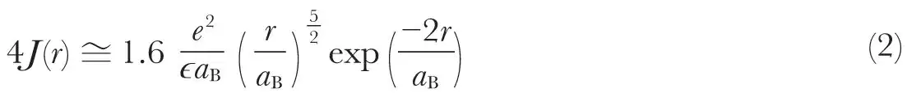
where r is the distance between donors, ϵ is the dielectric constant of the semiconductor, and aB is the semiconductor Bohr radius. This function, with values appropriate for Si, is plotted in Fig. 3. Equation (2), originally derived for H atoms, is complicated in Si by its valley degenerate anisotropic band structure29. Exchange coupling terms from each valley interfere, leading to oscillatory behaviour of J(r). In this discussion, the complications introduced by Si band structure will be neglected. In determining J(r) in Fig. 3, the transverse mass for Si (≅ 0.2me) has been used, and aB=30 Å. Because J is proportional to the electron wave function overlap, it can be varied by an electrostatic potential imposed by a “J-gate” positioned between the donors13. As shall be seen below, significant coupling between nuclei will occur when 4J≈μBB, and this condition approximates the necessary separation between donors of 100–200 Å. Whereas actual separations may be considerably larger than this value because the J gate can be biased positively to reduce the barrier between donors, the gate sizes required for the quantum computer are near the limit of current electronics fabrication technology. 中文
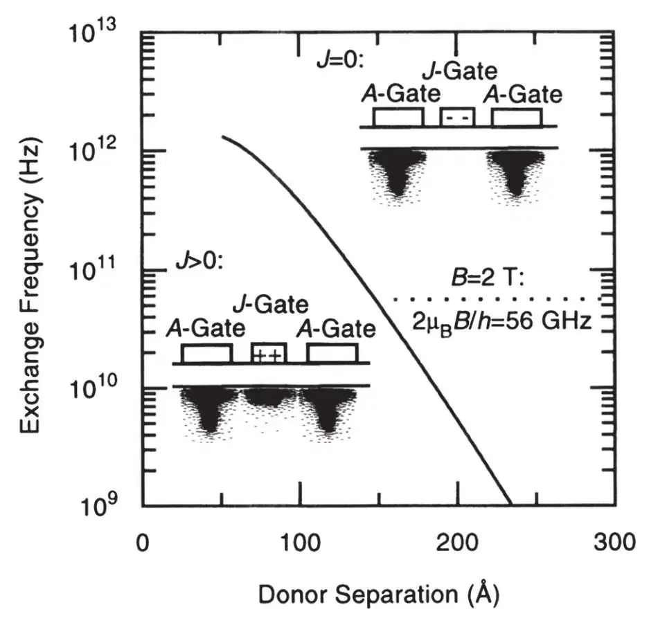
Fig. 3. J gates vary the electrostatic potential barrier V between donors to enhance or reduce exchange coupling, proportional to the electron wavefunction overlap. The exchange frequency (4J / h) when V=0 is plotted for Si. 中文
For two-electron systems, the exchange interaction lowers the electron singlet
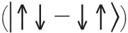
energy with respect to the triplets30. (The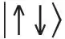
notation is used here to represent the electron spin state, and the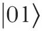
notation the nuclear state; in the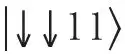
state, all spins point in the same direction. For simplicity, normalization constants are omitted.) In a magnetic field, however,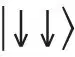
will be the ground state if J<μBB / 2 (Fig. 4a). In the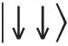
state, the energies of the nuclear states can be calculated to second order in A using perturbation theory. When A1=A2=A, the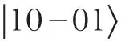
state is lowered in energy with respect to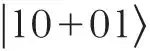
by: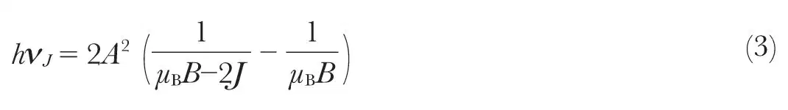
The
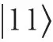
state is above the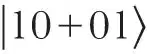
state and the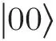
state below the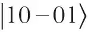
state by an energy hνA, given in equation (1). For the Si:31P system at B=2 T and for 4J / h=30 GHz, equation (3) yields νJ=75 kHz. This nuclear spin exchange frequency approximates the rate at which binary operations can be performed on the computer (νJ can be increased by increasing J, but at the expense of also increasing the relaxation rate of the coupled nuclear–electron spin excitations). The speed of single spin operations is determined by the size of Bac and is comparable to 75 kHz when Bac=10－3 T. 中文
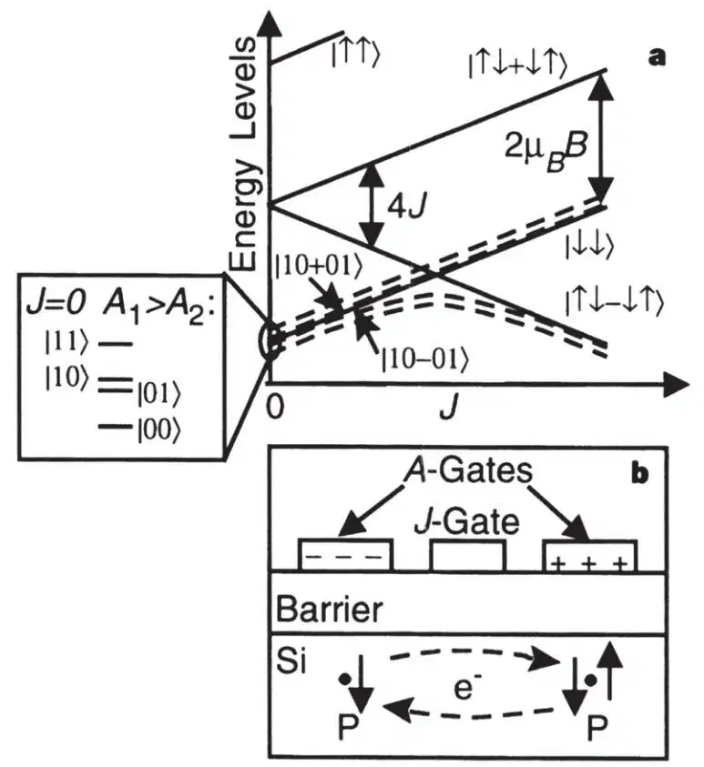
Fig. 4. Two qubit quantum logic and spin measurement. a, Electron (solid lines) and lowest energy-coupled electron – nuclear (dashed lines) energy levels as a function of J. When J<μBB / 2, two qubit computations are performed by controlling the
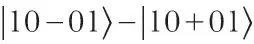
level splitting with a J gate. Above J=μBB / 2, the states of the coupled system evolve into states of differing electron polarization. The state of the nucleus at J=0 with the larger energy splitting (controllable by the A gate bias) determines the final electron spin state after an adiabatic increase in J. b, Only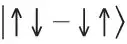
electrons can make transitions into states in which electrons are bound to the same donor (D－ states). Electron current during these transitions is measurable using capacitive techniques, enabling the underlying spin states of the electrons and nuclei to be determined. 中文
Spin Measurements
Measurement of nuclear spins in the proposed quantum computer is accomplished in a two-step process: distinct nuclear spin states are adiabatically converted into states with different electron polarization, and the electron spin is determined by its effect on the symmetry of the orbital wavefunction of an exchange-coupled two-electron system. A procedure for accomplishing this conversion is shown in Fig. 4. While computation is done when J<μBB / 2 and the electrons are fully polarized, measurements are made when J>μBB / 2, and
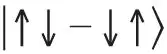
states have the lowest energy (Fig. 4a). As the electron levels cross, the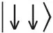
and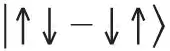
states are coupled by hyperfine interactions with the nuclei. During an adiabatic increase in J, the two lower-energy nuclear spin states at J=0 evolve into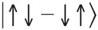
states when J>μBB / 2, whereas the two higher-energy nuclear states remain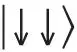
. If, at J=0, A1>A2 , the orientation of nuclear spin 1 alone will determine whether the system evolves into the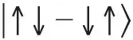
or the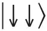
state during an adiabatic increase in J. 中文
A method to detect the electron spin state by using electronic means is shown in Fig. 4b. Both electrons can become bound to the same donor (a D－ state) if the A gates above the donors are biased appropriately. In Si:P, the D－ state is always a singlet with a second electron binding energy of 1.7 meV (refs 31, 32). Consequently, a differential voltage applied to the A gates can result in charge motion between the donors that only occurs if the electrons are in a singlet state. This charge motion is measurable using sensitive single-electron capacitance techniques33. This approach to spin measurement produces a signal that persists until the electron spin relaxes, a time that, as noted above, can be thousands of seconds in Si:P. 中文
The spin measurement process can also be used to prepare nuclear spins in a prescribed state by first determining the state of a spin and flipping it if necessary so that it ends up in the desired spin state. As with the spin computation procedures already discussed, spin measurement and preparation can in principle be performed in parallel throughout the computer. 中文
Initializing the Computer
Before any computation, the computer must be initialized by calibrating the A gates and the J gates. Fluctuations from cell to cell in the gate biases necessary to perform logical operations are an inevitable consequence of variations in the positions of the donors and in the sizes of the gates. The parameters of each cell, however, can be determined individually using the measurement capabilities of the computer, because the measurement technique discussed here does not require precise knowledge of the J and A couplings. The A-gate voltage at which the underlying nuclear spin is resonant with an applied Bac can be determined using the technique of adiabatic fast passage34: when Bac=0, the nuclear spin is measured and the A gate is biased at a voltage known to be off resonance. Bac is then switched on, and the A gate bias is swept through a prescribed voltage interval. Bac is then switched off and the nuclear spin is measured again. The spin will have flipped if, and only if, resonance occurred within the prescribed A-gate voltage range. Testing for spin flips in increasingly small voltage ranges leads to the determination of the resonance voltage. Once adjacent A gates have been calibrated, the J gates can be calibrated in a similar manner by sweeping J-gate biases across resonances of two coupled cells. 中文
This calibration procedure can be performed in parallel on many cells, so calibration is not a fundamental impediment to scaling the computer to large sizes. Calibration voltages can be stored on capacitors located on the Si chip adjacent to the quantum computer. External controlling circuitry would thus need to control only the timing of gate biases, and not their magnitudes. 中文
Spin Decoherence Introduced by Gates
In the quantum computer architecture outlined above, biasing of A gates and J gates enables custom control of the qubits and their mutual interactions. The presence of the gates, however, will lead to decoherence of the spins if the gate biases fluctuate away from their desired values. These effects need to be considered to evaluate the performance of any gate-controlled quantum computer. During the computation, the largest source of decoherence is likely to arise from voltage fluctuations on the A gates. (When J<μBB / 2, modulation of the state energies by the J gates is much smaller than by the A gates. J exceeds μBB / 2 only during the measurement process, when decoherence will inevitably occur.) The precession frequencies of two spins in phase at t=0 depends on the potentials on their respective A gates. Differential fluctuations of the potentials produce differences in the precession frequency. At some later time t=tϕ, the spins will be 180° out of phase; tϕ can be estimated by determining the transition rate between
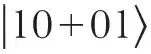
(spins in phase) and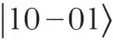
(spins 180° out of phase) of a two-spin system. The hamiltonian that couples these states is , where Δ is the fluctuating differential precession frequency of the spins. Standard treatment of fluctuating hamiltonians34 predicts:
, where Δ is the fluctuating differential precession frequency of the spins. Standard treatment of fluctuating hamiltonians34 predicts:  , where SΔ is the spectral density of the frequency fluctuations, and νst is the frequency difference between the
, where SΔ is the spectral density of the frequency fluctuations, and νst is the frequency difference between the 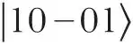
and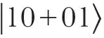
states. At a particular bias voltage, the A gates have a frequency tuning parameter α=dΔ / dV. Thus: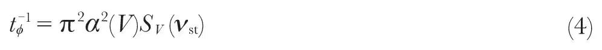
where SV is the spectral density of the gate voltage fluctuations. 中文
SV for good room temperature electronics is of order 10－18 V2 / Hz, comparable to the room temperature Johnson noise of a 50-Ω resistor. The value of α, estimated from Fig. 2, is 10–100 MHz V－1, yielding tϕ=10–1,000 s; α is determined by the size of the donor array cells and cannot readily be reduced (to increase tϕ) without reducing the exchange interaction between cells. Because α is a function of the gate bias (Fig. 2), tϕ can be increased by minimizing the voltage applied to the A gates. 中文
Although equation (4) is valid for white noise, at low frequencies it is likely that materials-dependent fluctuations (1 / f noise) will be the dominant cause of spin dephasing. Consequently, it is difficult to give hard estimates of tϕ for the computer. Charge fluctuations within the computer (arising from fluctuating occupancies of traps and surface states, for example) are likely to be particularly important, and minimizing them will place great demands on computer fabrication. 中文
Although materials-dependent fluctuations are difficult to estimate, the low-temperature operations of the computer and the dissipationless nature of quantum computing mean that, in principle, fluctuations can be kept extremely small: using low-temperature electronics to bias the gates (for instance, by using on chip capacitors as discussed above) could produce tϕ≈106 s. Electronically controlled nuclear spin quantum computers thus have the theoretical capability to perform at least 105 to perhaps 1010 logical operations during tϕ, and can probably meet Preskill’s criterion8 for an error probability of 10－6 per qubit operation. 中文
Constructing the Computer
Building the computer presented here will obviously be an extraordinary challenge: the materials must be almost completely free of spin (I ≠ 0 isotopes) and charge impurities to prevent dephasing fluctuations from arising within the computer. Donors must be introduced into the material in an ordered array hundreds of Å beneath the surface. Finally, gates with lateral dimensions and separations ~100 Å must be patterned on the surface, registered to the donors beneath them. Although it is possible that the computer can use SiO2 as the barrier material (the standard MOS technology used in most current conventional electronics), the need to reduce disorder and fluctuations to a minimum means that heteroepitaxial materials, such as Si / SiGe, may ultimately be preferable to Si / SiO2. 中文
The most obvious obstacle to building to the quantum computer presented above is the incorporation of the donor array into the Si layer beneath the barrier layer. Currently, semiconductor structures are deposited layer by layer. The δ-doping technique produces donors lying on a plane in the material, with the donors randomly distributed within the plane. The quantum computer envisaged here requires that the donors be placed into an ordered one- or two-dimensional array; furthermore, precisely one donor must be placed into each array cell, making it extremely difficult to create the array by using lithography and ion implantation or by focused deposition. Methods currently under development to place single atoms on surfaces using ultra-high-vacuum scanning tunnelling microscopy35 or atom optics techniques36 are likely candidates to be used to position the donor array. A challenge will be to grow high-quality Si layers on the surface subsequent to placement of the donors. 中文
Fabricating large arrays of donors may prove to be difficult, but two-spin devices, which can be used to test the logical operations and measurement techniques presented here, can be made using random doping techniques. Although only a small fraction of such devices will work properly, adjacent conventional Si electronic multiplexing circuitry can be used to examine many devices separately. The relative ease of fabricating such “hybrid”(quantum–conventional) circuits is a particularly attractive feature of Si-based quantum computation. 中文
In a Si-based nuclear spin quantum computer, the highly coherent quantum states necessary for quantum computation are incorporated into a material in which the ability to implement complex computer architectures is well established. The substantial challenges facing the realization of the computer, particularly in fabricating 100-Å-scale gated devices, are similar to those facing the next generation of conventional electronics; consequently, new manufacturing technologies being developed for conventional electronics will bear directly on efforts to develop a quantum computer in Si. Quantum computers sufficiently complex that they can achieve their theoretical potential may thus one day be built using the same technology that is used to produce conventional computers. 中文
(393, 133-137; 1998)
B. E. Kane
Semiconductor Nanofabrication Facility, School of Physics, University of New South Wales, Sydney 2052, Australia
Received 10 November 1997; accepted 24 February 1998.
References:
1. Steane, A. Quantum computing. Rep. Prog. Phys. 61, 117-173 (1998).
2. Bennett, C. H. Quantum information and computation. Physics Today 24-30 (Oct. 1995).
3. Shor, P. W. in Proc. 35th Annu. Symp. Foundations of Computer Science (ed. Goldwasser, S.) 124-134 (IEEE Computer Society, Los Alamitos, CA, 1994).
4. Ekert, A. & Jozsa, R. Quantum computation and Shor’s factoring algorithm. Rev. Mod. Phys. 68, 733-753 (1996).
5. Grover, L. K. Quantum mechanics helps in searching for a needle in a haystack. Phys. Rev. Lett. 79, 325-328 (1997).
6. Calderbank, A. R. & Shor, P. W. Good quantum error correcting codes exist. Phys. Rev. A 54, 1098-1105 (1996).
7. Steane, A. M. Error correcting codes in quantum theory. Phys. Rev. Lett. 77, 793-797 (1996).
8. Preskill, J. Reliable quantum computers. Proc. R. Soc. Lond. A 454, 385-410 (1998).
9. Lloyd, S. A potentially realizable quantum computer. Science 261, 1569-1571 (1993).
10. DiVincenzo, D. P. Quantum computation. Science 270, 255-261 (1995).
11. Gershenfeld, N. A. & Chuang, I. L. Bulk spin-resonance quantum computation. Science 275, 350-356 (1997).
12. Cory, D. G., Fahmy, A. F. & Havel, T. F. Ensemble quantum computing by NMR spectroscopy. Proc. Natl Acad. Sci. USA 94, 1634-1639 (1997).
13. Loss, D. & DiVincenzo, D. P. Quantum computation with quantum dots. Phys. Rev. A 57, 120-126 (1998).
14. Privman, V., Vagner, I. D. & Kventsel, G. Quantum computation in quantum Hall systems. Phys. Lett. A 239, 141-146 (1998).
15. Slichter, C. P. Principles of Magnetic Resonance 3rd edn, Ch 4 (Springer, Berlin, 1990).
16. Dobers, M., Klitzing, K. v., Schneider, J., Weimann, G. & Ploog, K. Electrical detection of nuclear magnetic resonance in GaAs-AlxGa1-xAs heterostructures. Phys. Rev. Lett. 61, 1650-1653 (1988).
17. Stich, B., Greulich-Weber, S. & Spaeth, J.-M. Electrical detection of electron nuclear double resonance in silicon. Appl. Phys. Lett. 68, 1102-1104 (1996).
18. Kane, B. E., Pfeiffer, L. N. & West, K. W. Evidence for an electric-field-induced phase transition in a spin-polarized two-dimensional electron gas. Phys. Rev. B 46, 7264-7267 (1992).
19. Wald, K. W., Kouwenhoven, L. P., McEuen, P. L., van der Vaart, N. C. & Foxon, C. T. Local dynamic nuclear polarization using quantum point contacts. Phys. Rev. Lett. 73, 1011-1014 (1994).
20. Dixon, D. C., Wald, K. R., McEuen, P. L. & Melloch, M. R. Dynamic polarization at the edge of a two-dimensional electron gas. Phys. Rev. B 56, 4743-4750 (1997).
21. CRC Handbook of Chemistry and Physics 77th edn 11-38 (CRC Press, Boca Raton, Florida, 1996).
22. Feher, G. Electron spin resonance on donors in silicon. I. Electronic structure of donors by the electron nuclear double resonance technique. Phys. Rev. 114, 1219-1244 (1959).
23. Wilson, D. K. & Feher, G. Electron spin resonance experiments on donors in silicon. III. Investigation of excited states by the application of uniaxial stress and their importance in relaxation processes. Phys. Rev. 124, 1068-1083 (1961).
24. Waugh, J. S. & Slichter, C. P. Mechanism of nuclear spin-lattice relaxation in insulators at very low temperatures. Phys. Rev. B 37, 4337-4339 (1988).
25. Kohn, W. Solid State Physics Vol. 5 (eds Seitz, F. & Turnbull, D.) 257-320 (Academic, New York, 1957).
26. DiVincenzo, D. P. Two-bit gates are universal for quantum computation. Phys. Rev. A 51, 1015-1021 (1995).
27. Lloyd, S. Almost any quantum logic gate is universal. Phys. Rev. Lett. 75, 346-349 (1995).
28. Herring, C. & Flicker, M. Asymptotic exchange coupling of two hydrogen atoms. Phys. Rev. 134, A362–A366 (1964).
29. Andres, K., Bhatt, R. N., Goalwin, P., Rice, T. M. & Walstedt, R. E. Low-temperature magnetic susceptibility of Si:P in the nonmetallic region. Phys. Rev. B 24, 244-260 (1981).
30. Ashcroft, N. W. & Mermin, N. D. in Solid State Physics Ch. 32 (Saunders College, Philadelphia, 1976).
31. Larsen, D. M. Stress dependence of the binding energy of D－ centers in Si. Phys. Rev. B 23, 5521-5526 (1981).
32. Larsen, D. M. & McCann, S. Y. Variational studies of two- and three-dimensional D－ centers in magnetic fields. Phys. Rev. B 46, 3966-3970 (1992).
33. Ashoori, R. C. Electrons in artificial atoms. Nature 379, 413-419 (1996).
34. Abragam, A. Principles of Nuclear Magnetism (Oxford Univ. Press, London, 1961).
35. Lyding, J. W. UHV STM nanofabrication: progress, technology spin-offs, and challenges. Proc. IEEE 85, 589-600 (1997).
36. Adams, C. S., Sigel, J. & Mlynek, J. Atom optics. Phys. Rep. 240, 143-210 (1994).
37. Warren, W. S. The usefulness of NMR quantum computing. Science 277, 1688-1690 (1997).
Acknowledgements. This work has been supported by the Australian Research Council. I thank R. G. Clark for encouragement and E. Hellman for suggesting that the work in ref. 18 could be relevant to quantum computation.
Correspondence should be addressed to the author (e-mail: kane@newt.phys.unsw.edu.au).